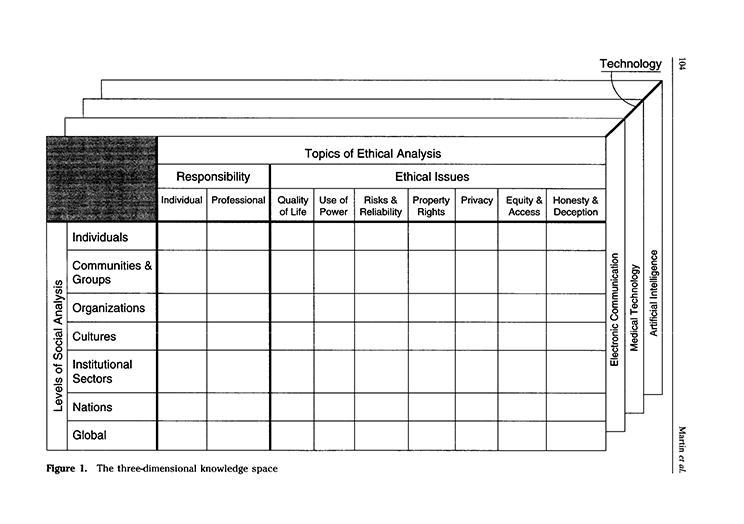

The page or area describing your chosen technology/topic and why it is significant and/or has important implications for society.
After the recent development of Chat GPT it seems as though the world has gone a little crazy over AI. With this brand-new piece of tech helping millions of students across the globe this has caused a little bit of a reliance on the app. And to think this is still the early stages. However, this got us thinking, if AI ever becomes advanced enough do we let it work? And if so what kind of work? Could we even trust AI in the work force? According to the literature, "Although a general definition for trust in human-machine relationships does not exist, most definitions agree that trust means that the system behaves as the user expects" (Papenmeier, A., 2022, p. 35). As if system does not operate how, one excepts and results in an accident of some kind how do we hold accountability to the machine?
E.g. What is the level of analysis - culture or organization; Responsibility - individual or professional; Ethical issue - power or equity; Technology - medical, nuclear, mobile?
ex. Martin, C. D., Huff, C., Gotterbarn, D., & Miller, K. (1996). A framework for implementing and teaching the social and ethical impact of computing. Education and Information Technologies, 1(2), 101-122.
Made 1 March 2021
thanks to W3C for tutorial and adapted code from Style Examples
also thanks to WDN for HTML and CSS resources and any adapted code snippets from Mozilla Developer Network